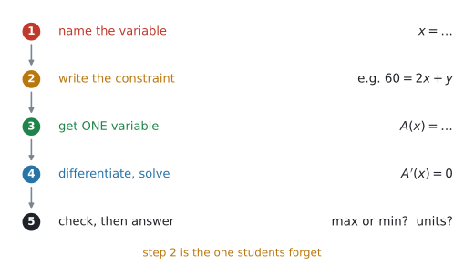
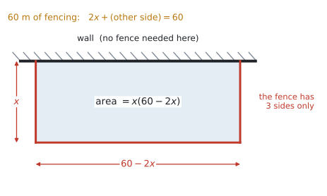
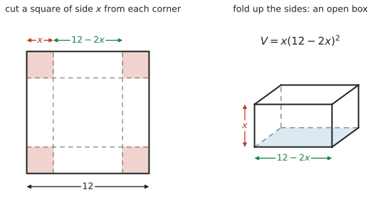
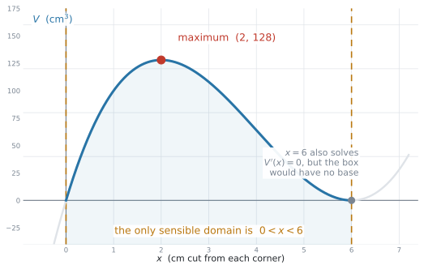
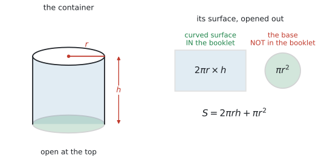

SL 5.7 — Optimisation（最適化問題）
- 文章から、自分で文字をおいて式を作れる。
- constraint（条件式）を使って、文字を1つに減らせる。
- できた式を微分し、\(f'(x) = 0\) を解いて最大・最小を求められる。
- 求めたものが最大か最小かを、理由をつけて言える。
- 現実に意味のある範囲（domain）を考え、意味のない解を捨てられる。
- 答えを、単位を付けて、問題の言葉で書ける。
- 利益・費用・面積・体積の問題を扱える（シラバスが名指ししています）。
シラバスの SL 5.7 の Guidance 欄に、はっきり書かれています。
In SL examinations, questions on kinematics will not be set.
「加速度から速度を出して、速度から変位を出して…」という物理の運動の問題は、SL では出題されません。 HL の内容です。
（SL 5.5 で見た「速度のグラフの面積＝距離」のように、velocity–time graph が文脈として出てくることはあります。それは Connections 欄に書かれています。ここで出ないと言っているのは、運動そのものを扱う設問です。）
出るのは、次の3つです（Guidance 欄）。
Examples: Maximizing profit, minimizing cost, maximizing volume for a given surface area.
The idea
1. 手順は5つです
SL 5.6 との違いは、最初の3つだけです。SL 5.6 では式が与えられていました。ここでは自分で作ります。

- 文字をおく … 何を \(x\) にするかを決めて、言葉で書く
- constraint（条件式）を書く … 「フェンスは全部で \(60\) m」など
- 文字を1つに減らす … 条件式から片方を消して、\(A(x)\) の形にする
- 微分して \(f'(x) = 0\) を解く
- 確かめて、答える … 最大か最小か、単位、問題の言葉
微分（手順4）は SL 5.3 でやったとおりで、難しくありません。
難しいのは、文章から式を作るところです。だからこの項目では、手順1〜3にいちばん時間をかけて練習してください。
2. constraint（条件式）で、文字を1つに減らす
最適化の問題には、ふつう文字が2つ出てきます。たての長さと横の長さ、半径と高さ、など。
AI SL では \(1\) 変数の微分を扱います。 ですから、目的の量を \(1\) つの文字の関数にします。 もう \(1\) つの文字を消す、ということです。
そのために使うのが constraint（条件式）── 問題文に必ず書いてある「決まっている量」です。
| 問題文の言葉 | constraint |
|---|---|
has 60 m of fencing |
使う長さの合計 \(= 60\) |
made from 300 cm² of card |
表面積 \(= 300\) |
the volume is 500 cm³ |
体積 \(= 500\) |
the two numbers add up to 20 |
\(x + y = 20\) |
やり方は、条件式を「\(y = \ldots\)」の形にして、もう一方の式に代入するだけです。
3. 例：壁ぎわの囲い
\(60\) m のフェンスで、壁を1辺に使って長方形の囲いを作ります。面積を最大にするには？

手順1 … 壁と垂直な辺を \(x\) m とおきます。
手順2 … フェンスは3辺だけです。壁と平行な辺を \(y\) m とすると、
\[ 2x + y = 60 \]
手順3 … \(y = 60 - 2x\) を面積の式に入れます。
\[ A = xy = x(60 - 2x) = 60x - 2x^{2} \]
手順4 … 微分して \(0\) とおきます。
\[ A'(x) = 60 - 4x = 0 \quad \Rightarrow \quad x = 15 \]
手順5 … \(y = 60 - 30 = 30\)、面積は \(15 \times 30 = 450\) m²。
\(4\) 辺ぶんと考えて \(2x + 2y = 60\) としてしまうのが、いちばん多い誤りです。
図をかいて、フェンスが何辺あるかを数えてください。 図 2 では3辺です。
4. 定義域を考える
現実には意味のない答えが出ることがあります。問題文には書いてなくても、自分で範囲を考える必要があります。
\(12\) cm 四方の紙の四すみから \(x\) cm の正方形を切って、箱を折る問題を見てみます。

\[ V = x(12 - 2x)^{2} \]
展開して微分すると
\[ V = 4x^{3} - 48x^{2} + 144x \]
\[ V'(x) = 12x^{2} - 96x + 144 = 12(x - 2)(x - 6) \]
解が2つ出ます。 \(x = 2\) と \(x = 6\)。

図 4 のとおり、意味があるのは \(0 < x < 6\) の部分だけです。
- \(x\) は正でなければなりません（切る大きさ）
- \(12 - 2x\) も正でなければなりません → \(x < 6\)
\(x = 6\) は捨てます。 そのとき箱の底が消えて、体積が \(0\) になるからです。
\[ V(2) = 2 \times 8^{2} = 128 \ \text{cm}^{3} \]
5. 最大か最小かを確かめる
SL 5.6 と同じです。\(f'\) の符号の変化か、グラフで判断します。
\(V'(x) = 12(x-2)(x-6)\) なら、
\[ V'(1) = 12(-1)(-5) = 60 > 0, \qquad V'(3) = 12(1)(-3) = -36 < 0 \]
\(+\) から \(-\) なので、\(x = 2\) は最大です。
\(2\) 次関数で \(x^{2}\) の係数が負なら、山が1つだけです。「上に凸だから最大」と一言書けば十分なことも多いです。
ただし justify や giving a reason と書かれていたら、必ず何か書いてください。 何も書かないのが一番いけません。
6. 答えの書き方
求められているのが \(x\) なのか、\(f(x)\) なのかを、必ず読み分けてください（SL 5.6 と同じです）。
| 問題文 | 答えるもの | 例 |
|---|---|---|
Find the value of x that maximises the area |
\(x\) | \(15\) m |
Find the maximum area |
\(f(x)\) | \(450\) m² |
Find the dimensions of the box |
辺の長さを全部 | \(8 \times 8 \times 2\) cm |
単位を必ず付けてください。 面積なら m²、体積なら cm³、お金ならドル。
7. 立体の公式は、公式集にあります（一部だけ）
体積・表面積の問題では、公式集の Prior learning – SL と SL 3.1 の欄が使えます（SL 3.1）。
| 公式集にあるもの | 式 |
|---|---|
| 直方体の体積 | \(V = lwh\) |
| 円柱の体積 | \(V = \pi r^{2} h\) |
| 円柱の側面の面積 | \(A = 2\pi r h\) |
| 円の面積 | \(A = \pi r^{2}\) |
| 球・円錐・角錐 | 公式集にあります |

公式集にあるのは Area of the curved surface of a cylinder、つまり側面だけです。
ふたや底の円は、自分で \(\pi r^{2}\) を足します。
\[ \text{ふたなし：} \ S = 2\pi r h + \pi r^{2} \qquad\qquad \text{ふたあり：} \ S = 2\pi r h + 2\pi r^{2} \]
問題文が open か closed かを、必ず確かめてください。 ここで \(\pi r^{2}\) を \(1\) つ多く足す／足し忘れる、というのがとても多い失点です。
Why it works
新しい理屈は、実は何もありません。SL 5.6 と同じことをしています。
\(f'(x) = 0\) で山と谷が見つかる ── その理由は SL 5.6 で見たとおりです。
この項目で新しいのは、扱う関数を自分で作るところだけです。
では、なぜ条件式で文字を減らせるのでしょうか。
囲いの問題で、\(x\) と \(y\) の \(2\) つが自由に動けるなら、面積 \(xy\) はいくらでも大きくできます。\(x = 100\)、\(y = 100\) にすればよいのですから。
そうならないのは、\(60\) m しかフェンスがないからです。\(x\) を大きくすれば、\(y\) は必ず小さくなります。
\[ 2x + y = 60 \]
この式が、\(x\) と \(y\) を結びつけています。 \(x\) を決めれば \(y\) も決まる。だから、
\[ A = x(60 - 2x) \]
は \(x\) だけの関数になります。
「使えるものが限られている」から、最適化という問題が生まれる。 制約がなければ、答えは「いくらでも大きく」になってしまいます。
\(A = x(60-2x)\) は上に凸の \(2\) 次関数なので、\(x = 15\) で最大になるのは平方完成でも出せます（SL 2.4）。
\(3\) 次以上になると平方完成は使えません。微分なら、どんな次数でも同じやり方で解けます。 そこが微分の強みです。
Worked examples
問題文は英語です。意味が理解できなかったら、問題文の下の「日本語訳」を開いてください。解説は日本語です。
例題 1 A farmer has \(60\) metres of fencing. He uses a straight wall as one side of a rectangular pen, so only three sides need to be fenced.
The two sides perpendicular to the wall each have length \(x\) metres.
(a) Show that the area of the pen is \(A = 60x - 2x^{2}\).
(b) Find the value of \(x\) that gives the greatest area.
(c) Find this greatest area.
日本語訳
ある農家が \(60\) m のフェンスを持っています。長方形の囲いの1辺にまっすぐな壁を使うので、フェンスが必要なのは3辺だけです。
壁に垂直な2辺の長さは、それぞれ \(x\) m です。
(a) 囲いの面積が \(A = 60x - 2x^{2}\) となることを示しなさい。
(b) 面積が最大になる \(x\) の値を求めなさい。
(c) その最大の面積を求めなさい。
(a) 壁と平行な辺を \(y\) m とします。フェンスは3辺なので、
\[ 2x + y = 60 \quad \Rightarrow \quad y = 60 - 2x \]
\[ A = xy = x(60 - 2x) = 60x - 2x^{2} \quad ✓ \]
(b) 微分します。
\[ \frac{dA}{dx} = 60 - 4x = 0 \quad \Rightarrow \quad x = 15 \]
(c) \(y = 60 - 30 = 30\) なので、
\[ A = 15 \times 30 = 450 \ \text{m}^{2} \]
試験ではこう書く
The greatest area is \(450\ \text{m}^{2}\), when \(x = 15\) metres.
Show that は、途中を全部書きます
答えが問題文に書いてあるので、点になるのは過程だけです。
- \(2x + y = 60\) の行（constraint）
- \(y = 60 - 2x\) の行
- \(A = xy\) に代入する行
この3行がそろって、はじめて満点です。 いきなり \(A = 60x - 2x^2\) と書いても点になりません。
(a) Let the third side be \(y\). Then \(2x + y = 60\), so \(y = 60 - 2x\).
\(A = xy = x(60 - 2x) = 60x - 2x^{2}\) ✓
(b) \(\dfrac{dA}{dx} = 60 - 4x = 0\), so \(x = 15\)
(c) \(A = 60(15) - 2(225) = 900 - 450 = 450\ \text{m}^{2}\)
例題 2 A shop sells \(x\) umbrellas each week. The selling price of one umbrella, in dollars, is \(30 - 0.5x\). The shop pays \(\$10\) for each umbrella and has fixed weekly costs of \(\$50\).
(a) Show that the weekly profit is \(P(x) = 20x - 0.5x^{2} - 50\).
(b) Find the number of umbrellas that should be sold each week to maximise the profit.
(c) Find the maximum weekly profit.
日本語訳
ある店は 1 週間に \(x\) 本のかさを売ります。かさ 1 本の販売価格は \(30 - 0.5x\) ドルです。店はかさ 1 本を \(10\) ドルで仕入れ、さらに毎週 \(50\) ドルの固定費がかかります。
(a) 週の利益が \(P(x) = 20x - 0.5x^{2} - 50\) となることを示しなさい。
(b) 利益を最大にするために、1 週間に何本売ればよいかを求めなさい。
(c) 最大の週の利益を求めなさい。
(a) 利益 ＝ 売上 − 費用です。
売上（revenue）は「\(1\) 本の値段 × 本数」。
\[ R = x(30 - 0.5x) = 30x - 0.5x^{2} \]
費用（cost）は「仕入れ \(+\) 固定費」。
\[ C = 10x + 50 \]
\[ P = R - C = 30x - 0.5x^{2} - 10x - 50 = 20x - 0.5x^{2} - 50 \quad ✓ \]
(b)
\[ P'(x) = 20 - x = 0 \quad \Rightarrow \quad x = 20 \]
(c)
\[ P(20) = 400 - 200 - 50 = 150 \]
試験ではこう書く
The shop should sell \(20\) umbrellas each week, giving a maximum weekly profit of \(\$150\).
\(30 - 0.5x\) は \(1\) 本の値段です。売上はそれに \(x\) を掛けます。
\[ R = x(30 - 0.5x) \qquad ✓ \qquad\qquad R = 30 - 0.5x \qquad ✗ \]
値段が下がるほどたくさん売れる、というモデルです。だから \(x\) が大きいと \(1\) 本の値段は下がります。
(a) \(R = x(30 - 0.5x) = 30x - 0.5x^{2}\); \(C = 10x + 50\)
\(P = R - C = 20x - 0.5x^{2} - 50\) ✓
(b) \(P'(x) = 20 - x = 0\), so \(x = 20\) umbrellas
(c) \(P(20) = 400 - 200 - 50 = \$150\)
例題 3 A square sheet of card measures \(12\) cm by \(12\) cm. A square of side \(x\) cm is cut from each corner, and the sides are folded up to make an open box.
(a) Write down an expression for the volume \(V\) of the box in terms of \(x\).
(b) Write down the possible values of \(x\).
(c) Find the value of \(x\) that gives the greatest volume, and find this volume.
日本語訳
正方形の厚紙は \(12\) cm × \(12\) cm です。四すみから \(1\) 辺 \(x\) cm の正方形を切り取り、辺を折り上げてふたのない箱を作ります。
(a) 箱の体積 \(V\) を \(x\) の式で書きなさい。
(b) \(x\) のとりうる値を書きなさい。
(c) 体積が最大になる \(x\) の値と、その体積を求めなさい。
(a) 底は \(1\) 辺 \(12 - 2x\) の正方形、高さは \(x\)（図 3）。
\[ V = x(12 - 2x)^{2} \]
(b) 定義域を考えます。
\[ 0 < x < 6 \]
(c) 展開して微分します。
\[ V = 4x^{3} - 48x^{2} + 144x \]
\[ V'(x) = 12x^{2} - 96x + 144 = 12(x - 2)(x - 6) = 0 \]
\[ x = 2 \quad \text{または} \quad x = 6 \]
\(x = 6\) は範囲の外なので捨てます。
\[ V(2) = 2 \times 8^{2} = 128 \ \text{cm}^{3} \]
試験ではこう書く
Reject \(x = 6\), since we need \(12 - 2x > 0\).
\(V'(1) = 60 > 0\) and \(V'(3) = -36 < 0\), so \(x = 2\) gives a maximum. The greatest volume is \(128\ \text{cm}^{3}\).
\(x(12-2x)^{2}\) のままでは、SL 5.3 の公式が使えません。かっこがあるからです。
\[ (12-2x)^{2} = 144 - 48x + 4x^{2} \]
\[ V = 144x - 48x^{2} + 4x^{3} \]
必ず展開してから微分してください。
(a) \(V = x(12 - 2x)^{2}\)
(b) \(0 < x < 6\)
(c) \(V = 4x^{3} - 48x^{2} + 144x\); \(V'(x) = 12(x-2)(x-6) = 0\)
\(x = 2\) or \(x = 6\); reject \(x = 6\) since \(12 - 2x > 0\)
\(V(2) = 128\ \text{cm}^{3}\)
例題 4 An open box has a square base of side \(x\) cm and height \(h\) cm. It is made from \(300\ \text{cm}^{2}\) of card, with no waste.
(a) Show that \(h = \dfrac{300 - x^{2}}{4x}\).
(b) Show that the volume of the box is \(V = 75x - \dfrac{x^{3}}{4}\).
(c) Find the dimensions of the box with the greatest volume.
日本語訳
ふたのない箱は、\(1\) 辺 \(x\) cm の正方形の底面と、高さ \(h\) cm をもちます。むだなく \(300\ \text{cm}^{2}\) の厚紙で作られています。
(a) \(h = \dfrac{300 - x^{2}}{4x}\) となることを示しなさい。
(b) 箱の体積が \(V = 75x - \dfrac{x^{3}}{4}\) となることを示しなさい。
(c) 体積が最大になる箱の各辺の長さを求めなさい。
(a) ふたがないので、面は底 \(1\) 枚と側面 \(4\) 枚です。
\[ x^{2} + 4xh = 300 \]
\[ 4xh = 300 - x^{2} \quad \Rightarrow \quad h = \frac{300 - x^{2}}{4x} \quad ✓ \]
(b) 体積は「底面積 × 高さ」。
\[ V = x^{2}h = x^{2} \times \frac{300 - x^{2}}{4x} = \frac{x(300 - x^{2})}{4} = \frac{300x - x^{3}}{4} = 75x - \frac{x^{3}}{4} \quad ✓ \]
(c)
\[ \frac{dV}{dx} = 75 - \frac{3x^{2}}{4} = 0 \quad \Rightarrow \quad 3x^{2} = 300 \quad \Rightarrow \quad x^{2} = 100 \quad \Rightarrow \quad x = 10 \]
\(x > 0\) なので \(x = -10\) は捨てます。
\[ h = \frac{300 - 100}{40} = \frac{200}{40} = 5 \]
試験ではこう書く
The box is \(10\ \text{cm} \times 10\ \text{cm} \times 5\ \text{cm}\), giving a volume of \(500\ \text{cm}^{3}\).
open なので、面は \(5\) 枚です
\[ \text{ふたなし：} \ x^{2} + 4xh \qquad\qquad \text{ふたあり：} \ 2x^{2} + 4xh \]
底 \(1\) 枚 \(+\) 側面 \(4\) 枚か、底とふたで \(2\) 枚 \(+\) 側面 \(4\) 枚か。
問題文の open / closed / with a lid / without a lid を、指で押さえて確かめてください。
Find the dimensions は、全部の辺を答えます
\(x = 10\) だけでは足りません。\(h\) も求めて、\(10 \times 10 \times 5\) と書きます。
dimensions（寸法）は、箱の形が決まるだけの情報という意味です。
(a) Surface area \(= x^{2} + 4xh = 300\), so \(h = \dfrac{300 - x^{2}}{4x}\) ✓
(b) \(V = x^{2}h = \dfrac{x(300 - x^{2})}{4} = 75x - \dfrac{x^{3}}{4}\) ✓
(c) \(\dfrac{dV}{dx} = 75 - \dfrac{3x^{2}}{4} = 0\), so \(x = 10\) (reject \(x = -10\))
\(h = 5\). The box is \(10 \times 10 \times 5\) cm.
例題 5 An open cylindrical container has radius \(r\) cm and height \(h\) cm. Its volume is \(1000\ \text{cm}^{3}\).
(a) Show that the surface area of the container is \(S = \pi r^{2} + \dfrac{2000}{r}\).
(b) Use your graphic display calculator to find the value of \(r\) that minimises \(S\), correct to three significant figures.
(c) Find this minimum surface area.
日本語訳
ふたのない円柱形の容器は、半径 \(r\) cm、高さ \(h\) cm です。体積は \(1000\ \text{cm}^{3}\) です。
(a) 容器の表面積が \(S = \pi r^{2} + \dfrac{2000}{r}\) となることを示しなさい。
(b) 電卓を使って、\(S\) を最小にする \(r\) の値を、有効数字 \(3\) 桁で求めなさい。
(c) その最小の表面積を求めなさい。
(a) 体積の式（公式集）から \(h\) を出します。
\[ \pi r^{2} h = 1000 \quad \Rightarrow \quad h = \frac{1000}{\pi r^{2}} \]
表面積は、底の円 \(+\) 側面。ふたはありません。
\[ S = \pi r^{2} + 2\pi r h = \pi r^{2} + 2\pi r \times \frac{1000}{\pi r^{2}} \]
\[ = \pi r^{2} + \frac{2000}{r} \quad ✓ \]
(b) Graphs ページに \(S\) を入れて、Analyze Graph → Minimum（GDCの使い方）で
\[ r = 6.83 \ \text{cm} \quad (3 \text{ s.f.}) \]
(c)
\[ S = 439 \ \text{cm}^{2} \quad (3 \text{ s.f.}) \]
\[ 2\pi r \times \frac{1000}{\pi r^{2}} = \frac{2000 \pi r}{\pi r^{2}} = \frac{2000}{r} \]
\(\pi\) が消えて、\(r\) が \(1\) つ残るのがポイントです。ここが合えば、あとは電卓の仕事です。
参考：手で解くと \(S' = 2\pi r - \dfrac{2000}{r^{2}} = 0\) から \(r^{3} = \dfrac{1000}{\pi}\)。
このとき \(h = 6.83\) で、\(r = h\) になります。「ふたのない円柱でむだが最小になるのは、高さと半径が等しいとき」という、きれいな結果です。
試験では、ここまで求められません。 シラバスは using technology で十分としています。
(a) \(\pi r^{2}h = 1000\), so \(h = \dfrac{1000}{\pi r^{2}}\)
\(S = \pi r^{2} + 2\pi rh = \pi r^{2} + \dfrac{2000}{r}\) ✓
(b) \(r = 6.83\) cm (3 s.f.)
(c) \(S = 439\ \text{cm}^{2}\) (3 s.f.)
Common errors
この項目で一番多い失点です。
\(1\) 変数の関数にしてからでないと、微分できません。「決まっている量」を式にする行が、必ず要ります。
壁を使うなら、フェンスは\(3\) 辺です。
必ず図をかいて、辺を数えてください。
open と closed を読み落とす
ふたのない箱は面が \(5\) 枚、ふたのある箱は \(6\) 枚。円柱も同じです。
表面積の式が \(1\) 面ぶん違うと、答えが全部変わります。
公式集にあるのは側面 \(2\pi r h\) だけです。円は自分で足します。
\(x(12-2x)^{2}\) は、そのままでは微分できません（AI SL に積の微分はありません）。
必ず展開して、\(ax^{n}\) の形が並んだ式にしてから微分します。
長さが負、または \(12 - 2x\) が負になる解は捨てます。
捨てた理由を一言書くところまでが答案です。
justify や giving a reason があったら、符号の変化かグラフの形を一文で書いてください。
the value of x… \(x\)the maximum area… \(A\)the dimensions… 辺を全部
問題文の最後の名詞を、指で押さえて読んでください。
\(450\) ではなく \(450\ \text{m}^{2}\)、\(128\) ではなく \(128\ \text{cm}^{3}\)。
面積は \(2\) 乗、体積は \(3\) 乗です。\(\text{cm}^{2}\) と \(\text{cm}^{3}\) を取りちがえないでください。
Show that で、答えだけを書く
答えが問題文に書いてあるので、過程だけが点です。
constraint の行、代入の行、整理の行 ── 全部書いてください。
\(r = 6.83\) を使って \(S\) を計算すると、わずかにずれることがあります。
電卓の中の値をそのまま使って最後に丸めてください。答えを Ans で受けるのが確実です。
Using your GDC (TI-Nspire CX II)
式を作るところは手で、最大・最小を出すところは電卓、という分担になります。
1. グラフをかいて、山か谷を出す
自分で作った式を \(f1(x)\) に入れます。
f1(x) = 4x^3-48x^2+144x
menu → Window/Zoom → Zoom - Fit
menu → Analyze Graph → MaximumSL 5.6 と同じ操作です。その山だけをはさむように、下限と上限を指定します。lower bound? と upper bound? の \(2\) 回、enter を押します（→ SL 2.4）。
箱の問題なら \(0 < x < 6\) です。\(x\) の範囲を \(0\) から \(6\) に設定しておくと、意味のない解が画面に出てこなくなります。
menu → Window/Zoom → Window Settingsこれだけで、\(x = 6\) を答えてしまう誤りが防げます。
2. \(\pi\) の入った式も、そのまま入ります
f1(x) = pi*x^2 + 2000/x\(\pi\) は電卓の \(\boxed{\pi}\) キーです。\(3.14\) と打たないでください。 精度が落ちます。
3. 最小の値も、同時に出ます
Minimum は \((6.83,\ 439)\) のように座標を返します。
- \(x\) 座標 … 「どうすればよいか」（\(r = 6.83\) cm）
- \(y\) 座標 … 「そのときいくつか」（\(S = 439\ \text{cm}^{2}\)）
答えの書き分けは、この \(2\) つの読み分けと同じです。
4. 式を作る途中は、電卓に頼れません
constraint を書く、\(h\) を消す、展開する ── ここは全部、手の仕事です。
電卓が返すのは数だけです。
- constraint（\(2x + y = 60\) など）
- \(1\) 文字にした式（\(A = 60x - 2x^{2}\)）
- 微分した式、または「電卓で最大を求めた」と分かる行
この3行があれば、たとえ最後の数を間違えても、大半の点が残ります。
Exercises
各問題に、折りたたみが3つ付いています。日本語訳、解答例（答案用紙に書くべきこと。英語です）、解説（なぜそうなるか。日本語です）。
まず自分で解いて、次に解答例と見くらべてください。解説は、合わなかったときだけ開けば十分です。
1 A rectangular field is to be enclosed using \(100\) metres of fencing on all four sides. One side has length \(x\) metres.
(a) Show that the area of the field is \(A = 50x - x^{2}\).
(b) Find the greatest possible area.
日本語訳
長方形の畑を、\(4\) 辺すべてに \(100\) m のフェンスを使って囲みます。\(1\) 辺の長さは \(x\) m です。
(a) 畑の面積が \(A = 50x - x^{2}\) となることを示しなさい。
(b) とりうる最大の面積を求めなさい。
(a) Let the other side be \(y\). Then \(2x + 2y = 100\), so \(y = 50 - x\).
\(A = xy = x(50 - x) = 50x - x^{2}\) ✓
(b) \(\dfrac{dA}{dx} = 50 - 2x = 0\), so \(x = 25\)
\(A = 25 \times 25 = 625\ \text{m}^{2}\)
今度は\(4\) 辺すべてにフェンスを使います。constraint は \(2x + 2y = 100\)、つまり \(x + y = 50\)。
壁を使う問題（例題1）と混同しないでください。 問題文をよく読むこと。
答えは \(25 \times 25\)、つまり正方形です。「周の長さが決まっているとき、面積が最大になるのは正方形」── 覚えておくと検算に使えます。
2 Two positive numbers add up to \(20\). One of them is \(x\).
(a) Write down an expression for their product \(P\) in terms of \(x\).
(b) Find the greatest possible value of \(P\).
日本語訳
\(2\) つの正の数の和は \(20\) です。そのうち \(1\) つは \(x\) です。
(a) 積 \(P\) を \(x\) の式で書きなさい。
(b) \(P\) のとりうる最大の値を求めなさい。
(a) The other number is \(20 - x\), so \(P = x(20 - x) = 20x - x^{2}\).
(b) \(P'(x) = 20 - 2x = 0\), so \(x = 10\)
\(P = 10 \times 10 = 100\)
constraint は \(x + y = 20\)。いちばん短い形です。
答えは \(2\) つとも \(10\)。 和が決まっているとき、積が最大になるのは同じ数のときです。
演習1の「正方形が最大」と、実は同じことを言っています。
3 The weekly profit, in dollars, from selling \(x\) items is modelled by
\[ P(x) = 60x - 0.2x^{2} - 500, \qquad 0 \le x \le 200 . \]
(a) Find the number of items that should be sold to maximise the profit.
(b) Find the maximum profit.
日本語訳
\(x\) 個を売ったときの週の利益（ドル）は、次の式でモデル化されます。
\[ P(x) = 60x - 0.2x^{2} - 500, \qquad 0 \le x \le 200 . \]
(a) 利益を最大にするために、何個売ればよいかを求めなさい。
(b) 最大の利益を求めなさい。
(a) \(P'(x) = 60 - 0.4x = 0\), so \(x = 150\) items
(b) \(P(150) = 9000 - 4500 - 500 = \$4000\)
式が与えられているので、constraint は要りません。 SL 5.6 と同じ形の問題です。
\(0.4x = 60\) から \(x = \dfrac{60}{0.4} = 150\)。小数で割るのを、電卓でやって構いません。
\(0.2 \times 150^{2} = 0.2 \times 22500 = 4500\) です。
\(150\) は \(0 \le x \le 200\) の中なので ✓
4 The cost, in dollars, of running a machine for \(x\) hours is modelled by
\[ C(x) = 0.5x^{2} - 30x + 700 . \]
(a) Find the number of hours that gives the lowest cost.
(b) Find this lowest cost.
日本語訳
機械を \(x\) 時間動かすときの費用（ドル）は、次の式でモデル化されます。
\[ C(x) = 0.5x^{2} - 30x + 700 . \]
(a) 費用が最も低くなる時間数を求めなさい。
(b) その最低の費用を求めなさい。
(a) \(C'(x) = x - 30 = 0\), so \(x = 30\) hours
(b) \(C(30) = 450 - 900 + 700 = \$250\)
\(0.5x^{2}\) を微分すると \(0.5 \times 2 = 1\) で \(x\)。\(1x\) とは書きません。
\(x^{2}\) の係数が正なので下に凸、つまり谷が1つだけ。最小になるのは確かです。
\(0.5 \times 900 = 450\) です。
5 A square sheet of card measures \(20\) cm by \(20\) cm. A square of side \(x\) cm is cut from each corner, and the sides are folded up to make an open box.
(a) Write down an expression for the volume \(V\) in terms of \(x\).
(b) Write down the possible values of \(x\).
(c) Find the value of \(x\) that gives the greatest volume, and find this volume, correct to three significant figures.
日本語訳
正方形の厚紙は \(20\) cm × \(20\) cm です。四すみから \(1\) 辺 \(x\) cm の正方形を切り取り、辺を折り上げてふたのない箱を作ります。
(a) 体積 \(V\) を \(x\) の式で書きなさい。
(b) \(x\) のとりうる値を書きなさい。
(c) 体積が最大になる \(x\) の値と、その体積を、有効数字 \(3\) 桁で求めなさい。
(a) \(V = x(20 - 2x)^{2}\)
(b) \(0 < x < 10\)
(c) \(V = 4x^{3} - 80x^{2} + 400x\); \(V'(x) = 12x^{2} - 160x + 400 = 4(x - 10)(3x - 10) = 0\)
\(x = 10\) or \(x = \dfrac{10}{3}\); reject \(x = 10\) since \(20 - 2x > 0\)
\(x = 3.33\) cm (3 s.f.), \(V = 593\ \text{cm}^{3}\) (3 s.f.)
例題3と同じ形です。数字が \(12\) から \(20\) に変わっただけ。
今度は \(x = \dfrac{10}{3} = 3.333\ldots\) と割り切れません。\(3\) 桁の有効数字で \(3.33\)。
\(V = \dfrac{16000}{27} = 592.59\ldots\) で、\(593\)。
\(x\) は \(\dfrac{10}{3}\) のまま \(V\) に代入してください。 電卓の中の値を使い、丸めるのは最後の \(1\) 回だけにします。
6 A closed box has a square base of side \(x\) cm and height \(h\) cm. Its volume is \(216\ \text{cm}^{3}\).
(a) Show that the surface area is \(S = 2x^{2} + \dfrac{864}{x}\).
(b) Find the value of \(x\) that minimises \(S\).
(c) Find the dimensions of the box.
日本語訳
ふたのある箱は、\(1\) 辺 \(x\) cm の正方形の底面と高さ \(h\) cm をもち、体積は \(216\ \text{cm}^{3}\) です。
(a) 表面積が \(S = 2x^{2} + \dfrac{864}{x}\) となることを示しなさい。
(b) \(S\) を最小にする \(x\) の値を求めなさい。
(c) 箱の各辺の長さを求めなさい。
(a) \(x^{2}h = 216\), so \(h = \dfrac{216}{x^{2}}\)
\(S = 2x^{2} + 4xh = 2x^{2} + 4x \times \dfrac{216}{x^{2}} = 2x^{2} + \dfrac{864}{x}\) ✓
(b) \(S = 2x^{2} + 864x^{-1}\), so \(\dfrac{dS}{dx} = 4x - \dfrac{864}{x^{2}} = 0\)
\(4x^{3} = 864\), so \(x^{3} = 216\) and \(x = 6\)
(c) \(h = \dfrac{216}{36} = 6\). The box is \(6 \times 6 \times 6\) cm.
closed なので面は \(6\) 枚：底とふたで \(2x^{2}\)、側面で \(4xh\)。
\(\dfrac{864}{x}\) は \(864x^{-1}\) に書き直してから微分します（SL 5.3）。\(864 \times (-1) = -864\)、指数は \(-2\) → \(-864x^{-2}\)。
答えは \(6 \times 6 \times 6\)、つまり立方体です。「体積が決まっているとき、表面積が最小になるのは立方体」── これも覚えておくと検算に使えます。
7 An open box has a square base of side \(x\) cm and height \(h\) cm. Its volume is \(500\ \text{cm}^{3}\).
(a) Show that the surface area is \(S = x^{2} + \dfrac{2000}{x}\).
(b) Find the dimensions of the box that uses the least card.
日本語訳
ふたのない箱は、\(1\) 辺 \(x\) cm の正方形の底面と高さ \(h\) cm をもち、体積は \(500\ \text{cm}^{3}\) です。
(a) 表面積が \(S = x^{2} + \dfrac{2000}{x}\) となることを示しなさい。
(b) 使う厚紙が最も少なくなる箱の各辺の長さを求めなさい。
(a) \(x^{2}h = 500\), so \(h = \dfrac{500}{x^{2}}\)
\(S = x^{2} + 4xh = x^{2} + \dfrac{2000}{x}\) ✓
(b) \(\dfrac{dS}{dx} = 2x - \dfrac{2000}{x^{2}} = 0\), so \(2x^{3} = 2000\) and \(x = 10\)
\(h = \dfrac{500}{100} = 5\). The box is \(10 \times 10 \times 5\) cm.
演習6との違いは open（ふたなし） だけ。底が \(x^{2}\) の \(1\) 枚になります。
uses the least card は「表面積が最小」という意味です。言いかえに気づけるかどうかが、この問題の山です。
検算。 \(S = 100 + 200 = 300\ \text{cm}^{2}\)。
8 A closed cylindrical can has radius \(r\) cm and height \(h\) cm. Its volume is \(500\ \text{cm}^{3}\).
(a) Show that the surface area is \(S = 2\pi r^{2} + \dfrac{1000}{r}\).
(b) Use your graphic display calculator to find the value of \(r\) that minimises \(S\), correct to three significant figures.
(c) Find the minimum surface area.
日本語訳
ふたのある円柱形の缶は、半径 \(r\) cm、高さ \(h\) cm で、体積は \(500\ \text{cm}^{3}\) です。
(a) 表面積が \(S = 2\pi r^{2} + \dfrac{1000}{r}\) となることを示しなさい。
(b) 電卓を使って、\(S\) を最小にする \(r\) の値を、有効数字 \(3\) 桁で求めなさい。
(c) 最小の表面積を求めなさい。
(a) \(\pi r^{2}h = 500\), so \(h = \dfrac{500}{\pi r^{2}}\)
\(S = 2\pi r^{2} + 2\pi rh = 2\pi r^{2} + 2\pi r \times \dfrac{500}{\pi r^{2}} = 2\pi r^{2} + \dfrac{1000}{r}\) ✓
(b) \(r = 4.30\) cm (3 s.f.)
(c) \(S = 349\ \text{cm}^{2}\) (3 s.f.)
closed なので、円は \(2\) 枚です。\(2\pi r^{2}\)。
約分は \(2\pi r \times \dfrac{500}{\pi r^{2}} = \dfrac{1000}{r}\)。\(\pi\) が消えて \(r\) が \(1\) つ残ります。
(b) は電卓で。\(f1(x) = 2 \cdot \pi \cdot x^2 + 1000/x\) を入れて Analyze Graph → Minimum。
参考：このとき \(h = 8.60\) cm で、\(h = 2r\) になります。「体積が決まった缶で材料が最小になるのは、高さが直径と等しいとき」です。
9 An open box has a square base of side \(x\) cm and height \(h\) cm. It is made from \(192\ \text{cm}^{2}\) of card.
(a) Show that \(h = \dfrac{192 - x^{2}}{4x}\).
(b) Show that \(V = 48x - \dfrac{x^{3}}{4}\).
(c) Find the greatest possible volume.
日本語訳
ふたのない箱は、\(1\) 辺 \(x\) cm の正方形の底面と高さ \(h\) cm をもち、\(192\ \text{cm}^{2}\) の厚紙で作られています。
(a) \(h = \dfrac{192 - x^{2}}{4x}\) となることを示しなさい。
(b) \(V = 48x - \dfrac{x^{3}}{4}\) となることを示しなさい。
(c) とりうる最大の体積を求めなさい。
(a) \(x^{2} + 4xh = 192\), so \(4xh = 192 - x^{2}\) and \(h = \dfrac{192 - x^{2}}{4x}\) ✓
(b) \(V = x^{2}h = \dfrac{x(192 - x^{2})}{4} = 48x - \dfrac{x^{3}}{4}\) ✓
(c) \(\dfrac{dV}{dx} = 48 - \dfrac{3x^{2}}{4} = 0\), so \(x^{2} = 64\) and \(x = 8\) (reject \(x = -8\))
\(h = \dfrac{192 - 64}{32} = 4\), so \(V = 64 \times 4 = 256\ \text{cm}^{3}\)
例題4とまったく同じ形です。\(300\) が \(192\) に変わっただけ。
\(\dfrac{3x^{2}}{4} = 48\) から \(3x^{2} = 192\)、\(x^{2} = 64\)、\(x = 8\)。\(x = -8\) を捨てる一言を忘れずに。
(c) は \(V = x^{2}h\) でも \(48(8) - \dfrac{512}{4} = 384 - 128 = 256\) でも同じです ✓
10 A factory’s weekly profit, in thousands of dollars, from producing \(x\) hundred items is modelled by
\[ P(x) = 24x - x^{2} - 80 . \]
The factory can produce at most \(800\) items per week, so \(0 \le x \le 8\).
(a) Find the value of \(x\) for which \(P'(x) = 0\).
(b) Explain why this value cannot be the answer.
(c) Find the greatest weekly profit the factory can make.
日本語訳
ある工場が \(x\) 百個を作るときの週の利益（千ドル）は、次の式でモデル化されます。
\[ P(x) = 24x - x^{2} - 80 . \]
工場は 1 週間に最大 \(800\) 個までしか作れないので、\(0 \le x \le 8\) です。
(a) \(P'(x) = 0\) となる \(x\) の値を求めなさい。
(b) この値が答えになりえない理由を説明しなさい。
(c) 工場が得られる最大の週の利益を求めなさい。
(a) \(P'(x) = 24 - 2x = 0\), so \(x = 12\)
(b) \(x = 12\) means \(1200\) items, which is outside the domain \(0 \le x \le 8\). The factory cannot produce that many.
(c) \(P\) is increasing for \(x < 12\), so on \(0 \le x \le 8\) the greatest value is at \(x = 8\).
\(P(8) = 192 - 64 - 80 = 48\), so the greatest weekly profit is \(\$48\,000\).
SL 5.6 の「端も候補」が、文脈の問題になった形です。
\(P'(x) = 0\) の解が範囲の外にあるので、そこでは答えられません。 \(x < 12\) ではずっと増えているので、範囲の右端 \(x = 8\) が最大です。
単位に注意。 \(x\) は「百個」、\(P\) は「千ドル」です。\(48\) は \(48\,000\) ドル、\(x = 8\) は \(800\) 個。
in thousands of dollars in hundreds のような言い方を、読み飛ばさないでください。
11 A rectangular sheet of card measures \(30\) cm by \(20\) cm. A square of side \(x\) cm is cut from each corner, and the sides are folded up to make an open box.
(a) Write down an expression for the volume \(V\) in terms of \(x\).
(b) Write down the possible values of \(x\).
(c) Use your graphic display calculator to find the value of \(x\) that gives the greatest volume, correct to three significant figures, and find this volume to the nearest \(\text{cm}^{3}\).
日本語訳
長方形の厚紙は \(30\) cm × \(20\) cm です。四すみから \(1\) 辺 \(x\) cm の正方形を切り取り、辺を折り上げてふたのない箱を作ります。
(a) 体積 \(V\) を \(x\) の式で書きなさい。
(b) \(x\) のとりうる値を書きなさい。
(c) 電卓を使って、体積が最大になる \(x\) の値を有効数字 \(3\) 桁で求め、その体積を \(\text{cm}^{3}\) の単位で四捨五入して整数で求めなさい。
(a) \(V = x(30 - 2x)(20 - 2x)\)
(b) \(0 < x < 10\)
(c) \(x = 3.92\) cm (3 s.f.), \(V = 1056\ \text{cm}^{3}\)
正方形ではないので、\(2\) つのかっこが違う形になります。\(30\) の側から \(2x\)、\(20\) の側から \(2x\)。
(b) 短いほうの辺で決まります。\(20 - 2x > 0\) より \(x < 10\)。\(30 - 2x > 0\)（\(x<15\)）よりきびしいほうを取ります。
(c) 展開すると \(V = 4x^{3} - 100x^{2} + 600x\)。\(V'(x) = 12x^{2} - 200x + 600\) はきれいに因数分解できません。
だから電卓を使います。 \(f1(x)\) に入れて、\(0 < x < 10\) の範囲で Analyze Graph → Maximum。
\(x = 3.9237\ldots \to 3.92\)、\(V = 1056.3\ldots \to 1056\ \text{cm}^{3}\)。
もう1つの解 \(x = 12.7\) は範囲の外です。ウィンドウを \(0\) から \(10\) にしておけば、そもそも画面に出てきません。